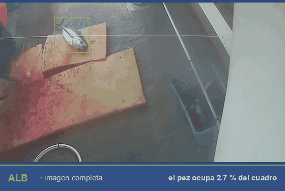

Diagnóstico ambiental
Evaluación de condiciones físicas, químicas y biológicas de sistemas costeros y marinos, identificación de presiones y caracterización de zonas críticas.
OceanMix integra diagnóstico ambiental, modelación numérica, ciencia de datos y gestión territorial para generar impacto ambiental y social verificable en sistemas costeros y marinos.
OceanMix es una sociedad enfocada en el desarrollo e implementación de soluciones científicas aplicadas a la gestión sostenible de sistemas costeros y marinos. Trabajamos en la frontera entre la ciencia, el territorio y las comunidades, traduciendo evidencia en decisiones con impacto medible.
Integrar diagnóstico ambiental, modelación numérica, ciencia de datos, análisis de procesos físicos y ecológicos, gestión territorial y diseño de estrategias de economía turquesa orientadas a la generación de impacto ambiental y social verificable.
Capacidades técnicas integradas en un mismo marco científico para abordar problemas reales del mar y la costa.
Evaluación de condiciones físicas, químicas y biológicas de sistemas costeros y marinos, identificación de presiones y caracterización de zonas críticas.
Simulación de procesos oceánicos y costeros con modelos como FVCOM. Resolución de corrientes, transporte y dinámica en costas, lagunas y mar abierto.
Modelado estadístico, aprendizaje automático y análisis de datos ambientales para extraer patrones y apoyar la toma de decisiones basada en evidencia.
Análisis integrado de dinámica oceánica, ecología marina y respuestas del ecosistema frente a presiones naturales y antropogénicas.
Diseño de instrumentos técnicos y normativos para el manejo de zonas costeras, con enfoque en ordenamiento y sostenibilidad de los recursos.
Estrategias que combinan economía azul y verde para generar valor a partir de los recursos marinos y costeros con impacto ambiental y social medible.
Iniciativas en marcha donde aplicamos nuestras capacidades para resolver problemas concretos del territorio costero y marino.

Ciencia y comunidad frente a la proliferación de una macroalga no nativa en Laguna Ojo de Liebre. Diagnóstico, extracción dirigida y rutas de aprovechamiento.
Ver proyecto →
Simulación de la dinámica oceánica del Golfo de California con FVCOM y mallas no estructuradas que capturan la complejidad de costas, islas y batimetría.
Ver proyecto →
Las cámaras ya están a bordo; falta quien vea las grabaciones. Un sistema que las lee y registra qué especie se capturó, sin observadores adicionales.
Ver proyecto →Oceanografía, ciencia de datos, ecología marina y derecho ambiental: un equipo interdisciplinario que combina rigor científico y trabajo en territorio.
Si eres institución, empresa, ONG o aliado técnico, podemos construir soluciones con impacto medible y beneficio directo para los sistemas costeros y marinos.